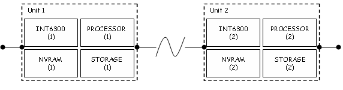

Firmware¶
Introduction¶
An Atheros chipset consists of an integral CPU, ROM and proprietary circuitry. The CPU requires a minimum amount of external SDRAM to execute runtime software and store runtime configuration parameters. The INT6000 chipset also requires a minimum amount of external flash memory in order to start. The INT6300 can use external flash memory in the same way as the INT6000 or it can use a local host processor as surrogate flash memory.
On startup, the SDRAM memory controller must be configured before runtime firmware and parameters are loaded. On the INT6000, runtime firmware and configuration parameters must be loaded from external flash memory. On the INT6300, it may be loaded from external flash memory or from a external host processor. Runtime firmware determines device capability. Runtime configuration parameters determine device network identity and personality.
The following sections identify and describe firmware related components and discuss some of the routine actions required to manage them. Consult the Atheros HomePlug AV Hardware Technical Reference Manual and HomePlug AV Firmware Technical Reference Manual for more information.
Firmware Components¶
Device initialization involves the following components. They are described here and then referenced throughout the toolkit documentation. You may want to read and re-read this page.
Bootloader¶
The Bootloader is permanent software burned into the chipset. The INT6000 and INT6300 both have a Bootloader program but they behave differently because the INT6000 needs flash memory and the INT6300 does not. Neither the INT6000 Bootloader nor the INT6300 Bootloader can write to flash memory.
On startup, the INT6000 Bootloader attempts to load runtime firmware from flash memory into SDRAM. If flash memory is not available, or the runtime firmware stored there cannot be loaded, then the INT6000 Bootloader cannot continue so the device cannot function.
On startup, the INT6300 Bootloader attempts to load runtime firmware from flash memory into SDRAM. If flash memory is not available, or the runtime firmware stored there cannot be loaded, then Bootloader will request runtime firmware from the local host processor.
Softloader¶
An optional program stored in flash memory in place of runtime firmware. This program is used on the INT6000 to support the Boot From Host operation, if needed. It is not used on the INT6300 because the INT6300 Bootloader now performs similar functions. The Softloader cannot write to flash memory.
On startup, the INT6000 Bootloader loads the Softloader from flash memory into SDRAM, as it would do with runtime firmware. The Softloader then requests the actual runtime firmware from local host.
Memory Configuration Parameters¶
A small block of information that describes the type, size and characteristics of the SDRAM available for the benefit of the Bootloader. On the INT6000, SDRAM configuration must be stored in flash memory. On the INT6300, it may be stored in flash memory or on the local host. The INT6300 Bootloader attempts to read configuration information from flash memory when it is present; otherwise, it requests that information from the local host using a VS_HST_ACTION message and so the host must store this information until it is requested.
There are two SDRAM configuration file formats. The first format is used by the Windows Device Manager and the int6k2 program and typically has a .config file extension. The second format is used by the int6k program and int6kf program and typically has a .cfg file extension. The latter format is more robust and should eventually replace the format.
The Windows Device Manager form consists of 64 hexadecimal ASCII characters. Files are at least 64 bytes but only the first 64 bytes are used. Files can be modified using a text editor. ASCII hex to binary conversion and checksum computation is needed on input. The config2cfg program can be used to convert this format to Open Powerline Toolkit format.
The Open Powerline Toolkit format consists of 32 binary bytes plus a 4 byte checksum. The file size is exactly 36 bytes. No conversion or checksum computation is needed on input. The chkcfg program can be used the validate this file format because it contains a checksum.
The INT6400 chipset does not need a memory configuration parameter file because it has a different memory controller than earlier chipsets. SDRAM is now configured dynamically by an applets stored in the .nvm file.
Runtime Firmware (MAC Software)¶
The executable image that determines INT6000 or INT6300 capability and functionality. Runtime firmware refers to any executable image except the Bootloader which is considered to be boot firmware. Firmware files have a .nvm extension and can contain multiple firmware images. One of these images could be the parameter information block but Atheros currently distributes that as a separate file. The chknvm program can be used to detect obsolete or corrupt .nvm files. Runtime firmware can write to flash memory and must be running in order to re-program the chipset.
Parameter Information Block (PIB)¶
The configuration image that determines device network identity, functional capability and operational mode. The PIB structure often changes from one major firmware release to the next and often is not portable across major releases. Parameter information files have a .pib extension by convention and contain one parameter set. The chkpib program can be used to detect obsolete or corrupt PIB files.
Recent firmware releases support two PIB images in flash memory: the Factory PIB and the User PIB. The Factory PIB is the first PIB image written to flash memory. Once written, the Factory PIB cannot be changed without special software. The User PIB is created and over-written whenever the device needs to save new PIB parameters. Factory default values are restored by erasing the User PIB and rebooting the device. When a device reboots, it attempts to load the User PIB from flash memory. Failing that, it attempts to load the Factory PIB from flash memory. Failing that, it loads a Default PIB having minimum functionality. The loaded PIB becomes the Working PIB and determines runtime device identity and behavior.
Architecture Overview¶
The following figure illustrates a hypothetical powerline network consisting of two devices. Each device has an INT6300 with optional dedicated flash memory and an onboard processor with associated storage. The processor in each device is the local host for that device and the remote host for the other device. The processor storage is unspecified but it must be persistent. The two devices are connected via coax or powerline. The flash memory is optional in this design because it uses the INT6300 chipset.
Simple Network¶
The Boot Loader is permanent program that executes on startup. It detects the presence of flash memory and attempts to read SDRAM configuration from flash memory then load and runtime the firmware image and PIB from flash memory. On success, the Boot runtime firmware starts and the device assumes HomePlug AV compliant behavior. On failure, the Boot Loader requests SDRAM configuration, runtime firmware image and PIB from the local host. The local host must be prepared to respond to these requests.
On a system having no flash memory, the Boot Loader will request SDRAM configuration information from the local host. Once that is received, the Boot Loader will request a firmware image and PIB from the local host. The local host determines which firmware image and PIB to download, manages the download sequence and starts firmware execution.
Atheros software, such as the Windows Device Manager, Linux Flash Utility and Embedded API all support the Boot from Host configuration.
Once the firmware is running on the INT6300 , a remote host can forward runtime firmware and PIB to the local host via the INT6300 firmware. The remote host might reside on another*INT6300* device, as shown in the previous figure, or be located anywhere on the HomePlug AV network. In either case, the operations described are the same.
Firmware Boot Process¶
The INT6300 can boot HomePlug AV firmware from either dedicated flash memory or a local host processor. This means that dedicated flash memory in not necessary when an onboard processor having persistent storage is available. The absence of dedicated flash memory and availability of an onboard host processor is called a Boot from Host configuration.
The Boot from Host configuration is of interest to customers who are committed to using a host processor in their INT6300 based product and want to use it to eliminate the additional cost of dedicated flash memory to store HomePlug AV firmware for INT6300 devices.
The Boot from Host configuration supports three operations: Upgrade Device, Update Local Host and Boot from Host. Product designers must write host software to support all three operations as described later in this document. Atheros provides an Embedded Application Program Interface to assist product designers with this effort. Obtain a copy of the HomePlug AV Application Programming Interface User’s Guide from Atheros Communications, Ocala FL USA for more information.
Readers should not confuse a Boot from Host configuration with the Boot from Host operation. The former is a hardware configuration having an INT6300 with no dedicated flash memory available. The latter is the process of downloading configuration information, firmware and PIB from the local host to the device and starting firmware execution on startup.
This discussion assumes that the reader is familiar with the following:
- The distinction between a local and remote host
- The relationship between the powerline device H1, M1 and PHY interfaces.
- The structure of the following Atheros Management Message types:
VS_HST_ACTION,VS_SET_SDRAM,VS_WR_MEM,VS_WR_MOD,VS_RS_DEV,VS_ST_MACandVS_WRITE_AND_EXECUTE. Be aware that message typesVS_SET_SDRAM,VS_WR_MEM,VS_WR_MODandVS_ST_MACare deprecated and will no longer be supported by the newest firmware. - Hardware architecture covered in the QCA Powerline Hardware Technical Reference Manual and the management message formats covered in the QCA Powerline Firmware Technical Reference Manual.
Boot from Host Configuration¶
The Boot from Host configuration requires a permanent connection between the powerline device and a local host having some type of persistent storage. In most cases, the powerline device and local host are co-located, possibly on the same board or same chip, and act together as an integral unit. Essentially, the local host provides persistent memory for the device.
The Boot from Host configuration lets the local host decide which runtime parameters and firmware to download on startup. This offers a considerable degree of product adaptability, allowing different parameter and firmware combinations to be downloaded based on external factors.
In a Boot from Host configuration, the processor must act as local host while the device is booting but it can also act as remote host when upgrading other devices. The former is a design requirement and latter is a design option.
Things to Remember¶
The Boot from Host configuration offers design flexibility but also increases the possibilities. Remember that the processes described here are based on simple rules that ultimately dictate why each process step is needed. Readers may find it helpful to review these rules.
- The softloader and bootloader programs have limited vocabulary.
The INT6000 softloader recognizes only the
VS_SW_VER,VS_ST_MAC,VS_RS_DEV,VS_WR_MODrequests. It does not recognizeVS_WR_MEM. The INT6300 bootloader recognizes only theVS_SW_VER,VS_WR_MEM,VS_ST_MAC,VS_RS_DEVandVS_SET_SDRAMrequests. It does not recognizeVS_WR_MOD. The INT6400 bootloader recognizes only theVS_SW_VER,VS_WR_MEM,VS_ST_MAC,VS_RS_DEVrequests. It recognizesVS_SET_SDRAMand responds to it but ignores it. It does not recognizeVS_WR_MOD. The AR7400 bootloader recognizes onlyVS_SW_VER,VS_WR_MEM,VS_ST_MAC,VS_RS_DEVrequests. It recognizesVS_SET_SDRAMand responds to it but ignores it. It does not recognizeVS_WR_MOD. The AR7420 bootloader recognizes onlyVS_SW_VER,VS_RS_DEV,VS_WRITE_AND_EXECUTEandVS_RAND_MAC_ADDRESSrequests. Early versions recognizeVS_WRITE_MEMandVS_ST_MACrequests but they must not be used. Softloader/Bootloader MMEs ^^^^^^^^^^^^^^^^^^^^^^^^^^ MME NAME INT6000 Softloader INT6300 Bootloader INT6400 Bootloader AR7400 Bootloader AR7420 Bootloader 0xA000 VS_SW_VER Yes Yes Yes Yes Yes 0xA008 VS_WR_MEM No Yes Yes Yes Deprecated 0xA00C VS_ST_MAC Yes Yes Yes Yes Deprecated 0xA01C VS_RS_DEV Yes Yes Yes Yes Yes 0xA020 VS_WR_MOD Yes No No No No 0xA05C VS_SDRAM No Yes Ignored Ignored No 0xA060 VS_HOST_ACTION No Yes Yes Yes Yes 0xA098 VS_WRITE_AND_EXECUTE No No No Yes Yes 0xA0D4 VS_RAND_MAC_ADDRESS No No No Yes Yes - The Softloader, Bootloader and runtime firmware may treat the same MME differently because each is a different program. A notorious obvious example is the
VS_SW_VERmessage type. This means that one may need to be aware of the device state when anticipating device behaviour or interpreting device response. - The local host is surrogate flash memory. When dedicated flash memory is not available to a device, the device will request firmware and parameter storage services from the local host using
VS_HST_ACTIONmessages. The local host must be programmed to detect and respond to these messages or the firmware will appear to hang. See program int6khost, int64host, amphost or plchost to demonstrate and experiment with this interaction. - Only runtime firmware can write flash memory. Runtime firmware must be executing in order to write flash memory or upload to the local host. The Softloader and Bootloader cannot perform either operation.
- All PIB changes must be written in flash memory. There are several things that can cause PIB changes. When a PIB change is needed, the Working PIB is copied to a scratch area and modified there. The Scratch PIB must then be written to flash memory or sent to the local host for storage. The device then resets causing the stored PIB to replace the Working PIB. If a freshly downloaded PIB changes for any reason then the cycle will repeat, automatically.
- Runtime firmware updates the PIB after joining and before leaving an AVLN. This will cause a device reset in each case. If the device is using the local host for persistent storage, runtime firmware will send the associated
VS_HST_ACTIONmessages to the host and the host will send the associatedVS_RD_MODandVS_RS_DEVmessages as per Update Local Host.
Every Little Bit Hurts¶
With the addition of Push Button Encryption, and other planned features, runtime firmware can now modify the PIB. Consequently, host applications must not assume that the PIB has not changed since it was last downloaded. Atheros strongly recommends that applications always perform a read-modify-write when making PIB modifications. Failure to do so can result in infinite reset loops caused when a device modifies the PIB that has just been downloaded.
As one example, recent PIBs contain a network membership bit to indicate that the device has successfully joined the network associated with the current NMK. If the firmware detects the network and discovers that the membership bit is clear then it will join the network and set the bit. The firmware will then attempt to preserve the change by sending a VS_HOST_ACTION message to the local host. If the host application does not upload and store the changed PIB (as the device requested) before resetting the device then the original PIB will be downloaded again, after reset, and the process will repeat. Of course, a similar situation will occur when the device leaves the network and again when it joins another network.
Liar! Liar! Pants on Fire!¶
It is important to use the right Boot from Host sequence for each type of Atheros device. This means that you should query the device using a VS_SW_VER message beforehand to determine or confirm the device type. Although this should be a simple operation, there have been several changes that complicate matters.
- The INT6300 Bootloader incorrectly identifies the chipset as an INT6000 chipset in the
MDEVICEIDfield of theVS_SW_VERmessage. - The AR7400 Bootloader incorrectly identifies the chipset as an INT6400 chipset in the
MDEVICEIDfield of theVS_SW_VERmessage. - The Bootloader, for INT6400 chipsets and later, returns two additional field,
IDENTandSTEP_NUMBERin theVS_SW_VERconfirmation message. These fields, the hardware identifier and step number, are correct but are not returned in earlier chipsets.
The table below illustrates what is reported by various firmware, in the DEVICEID field of the VS_SW_VER message, on each type of hardware platform.
Legacy Device Identification¶
| Chipset | DEVICEID/IDENT (Bootloader) | MVERSION (Bootloader) | DEVICEID/IDENT (Firmware) | MVERSION (Firmware) |
|---|---|---|---|---|
| INT6000 | 0x01 / 0x00000042 | BootLoader | 0x01 / na | INT6000-MAC-0-0-3213-1206-20071224-FINAL |
| INT6300 | 0x02 / 0x00006300 | BootLoader | 0x02 / na | INT6300-MAC-0-0-4203-00-4089-20091105-FINAL |
| INT6400 | 0x03 / 0x00006400 | BootLoader | 0x03 / na | INT6400-MAC-4-3-4304-01-4397-20100924-FINAL |
| INT7400 | 0x03 / 0x00007400 | BootLoader | 0x04 / na | INT7400-MAC-5-2-5213-01-1027-20110428-FINAL |
| INT7450 | 0x03 / 0x0F001D1A | BootLoader | 0x20 / 0x00001D1A | QCA7450-MAC-5-2-5213-01-1027-20110428-FINAL |
| INT7451 | 0x03 / 0x00007400 | BootLoader | 0x20 / 0x0E001D1A | QCA7451-MAC-5-2-5213-01-1027-20110428-FINAL |
| AR6405 | 0x03 / 0x00006400 | BootLoader | 0x05 / na | INT6405-MAC-4-3-4304-01-4397-20100924-FINAL |
| AR7420 | 0x05 / 0x001CFCFC | BootLoader | 0x20 / 0x001CFCFC | MAC-QCA7420-2.5.14.2259-23-20110621-FINAL |
| QCA6410 | 0x05 / 0x001B58EC | BootLoader | 0x21 / 0x001B58EC | MAC-QCA6410-2.5.14.2259-23-20110621-FINAL |
| QCA6411 | 0x05 / 0x001B58BC | BootLoader | 0x21 / 0x001B58BC | MAC-QCA6411-2.5.14.2259-23-20110621-FINAL |
| QCA7000 | 0x05 / 0x001B589C | BootLoader | 0x22 / 0x001B589C | MAC-QCA7000-1.4.13.3259-43-20110621-FINAL |
To properly detect the correct chipset perform the following steps.
- Send a
VS_SW_VERrequest message from the local host to the local device using the Atheros Local Management Address. - Read the
VS_SW_VERconfirm message returned to the host by the device. - Extract and save the
MDEVICEIDfield (a small integer) and theMVERSIONfield (a string). - If the
MVERSIONstring is “SoftLoader” then theMDEVICEIDfield is valid. - If the
MVERSIONstring is not “BootLoader” then theMDEVICEIDfield is valid unless it is0x07. In that case, set the storedDEVICEIDto0x04to indicate an AR7400. Do not inspect theIDENTfield because it does not exist in the firmware version of theVS_SW_VERmessage on any platform. - If the
MDEVICEIDfield is1, indicating an INT6000, then the chipset is actually an INT6300. Set the storedMDEVICEIDto2, indicating an INT6300. Do not inspect theIDENTfield because it does not exist in the BootLoader version of theVS_SW_VERmessage for either of these two chipsets. - If the
MDEVICEIDfield is3, indicating an INT6400, then the chipset could be either an INT6300 or an AR7400. Inspect theIDENTfield. - If the
IDENTfield is0x6400, indicating an INT6400, then the storedMDEVICEIDis valid. - If the
IDENTfield is0x7400, indicating an AR7400, then set the storedMDEVICEIDto4, indicating an AR7400.
Having performed the previous conversions, the expression (1 << (DEVICEID - 1)) now indicates the proper IGNORE bit found in each NVM file header. Unfortunately, this only works for DeviceID values from 0x01 through 0x06. After that, the device identification scheme changes.
But wait! There’s more ...¶
Starting with the AR7420, the DeviceID field in VS_SW_VER is now the DEVICE_CLASS field and identifies the “Device Family”, not the device type. Instead, the IDENT field in VS_SW_VER identifies the device type and the IDENT field is located at a variable offset within the message frame. Previously, the IDENT was located a fixed offset within the frame.
Device Identification¶
| Chipset | Softloader | Bootloader | Firmware | Identity |
|---|---|---|---|---|
| INT6000 | 0x01 | 0x01 | 0x00000042 | |
| INT6300 | 0x01 | 0x02 | 0x00006300 | |
| INT6400 | 0x03 | 0x03 | 0x00006400 | |
| AR7400 | 0x03 | 0x04 | 0x00007400 | |
| AR6405 | 0x03 | 0x05 | 0x00006400 | |
| AR7420 | 0x05 | 0x20 | 0x001CFCFC | |
| QCA6410 | 0x05 | 0x21 | 0x001B58EC | |
| QCA7000 | 0x05 | 0x22 | 0x001B589C |
Upgrade Device (INT6000/INT6300/INT6400)¶
The Upgrade Device operation downloads firmware and/or PIB from a remote host to an Atheros device for permanent storage and immediate execution. The device determines where and how it will store the information based on the availability of onboard flash memory. If the device has dedicated flash memory then it will store the firmware and PIB there and reset itself; otherwise, it will hand the firmware and PIB to the local host for storage and the local host will reset the device. The reset ensures that new firmware and PIB take immediate effect once they are saved. This operation requires custom software on the remote host and Atheros firmware on the device.
Upgrade Device (INT6000/INT6300/INT6400)¶
REMOTE-HOST INT6300/INT6400
[01] |-------- VS_WR_MOD.REQ ------------>| [01]
[01] |<------- VS_WR_MOD.CNF -------------| [01]
[01] |----------------------------------->| [01]
[01] |<-----------------------------------| [01]
| |
[02] |-------- VS_WR_MOD.REQ ------------>| [02]
[02] |<------- VS_WR_MOD.CNF -------------| [02]
[02] |----------------------------------->| [02]
[02] |<-----------------------------------| [02]
| |
[03] |-------- VS_MOD_NVM.REQ ----------->| [04]
[05] |<------- VS_MOD_NVM.CNF ------------| [04]
| | [06]
- Optionally, the remote host writes firmware to the device by sending a series of
VS_WR_MOD.REQmessages and waiting for aVS_WR_MOD.CNFmessage after each one. The messageMODULEIDfield is set to0x01for this operation. - Optionally, the remote host writes the PIB to the device by sending
VS_WR_MOD.REQmessages and waiting for aVS_WR_MOD.CNFmessage after each one. TheMODULEIDis set to0x02for this operation. - The remote host commits the firmware and/or PIB to persistent storage by sending a
VS_MOD_NVM.REQmessage and waiting for aVS_MOD_NVM.CNFmessage. - The device received the
VS_MOD_NVM.REQand sends aVS_MOD_NVM.CNFmessage to the remote host. - The remote host receives the
VS_MOD_NVM.CNFand proceeds with other activity. The remote host does not know or care that the device may not have dedicated flash memory available. - The device determines where and how to store the information. If dedicated flash memory is available, the device writes the downloaded firmware and PIB to flash memory and performs a software reset that results in a normal Boot from Flash operation. If no dedicated flash memory is available, the device initiates an Update Local Host operation.
The device does not notify the remote host when the upgrade operation completes. It is therefore incumbent on the remote host to determine ultimate success or failure by polling the device, possiby using a VS_SW_VER.REQ message, until a response is received. The complete upgrade operation can take from 20 seconds to 45 seconds depending on device configuration.
Update Local Host (INT6000/INT6300/INT6400)¶
The Update Local Host operation transfers a firmware image and/or PIB image from the device to the local host for permanent storage. After the firmware and PIB are stored, the local host will reset the device and the device will retrieve parameters and firmware using the Boot from Host operation described in the next section.
The firmware may initiate this operation after a remote host has downloaded new firmware or PIB and issued a VS_MOD_NVM.REQ to the device, the device has been asked to restore factory default settings or the firmware has dynamically altered the runtime PIB in some way. Consequently, the device will be reset by the host in each case.
The device initiates this operation to complete an Upgrade Device operation when the device has no dedicated flash memory onboard. This operation requires running Atheros firmware on the device and custom software on the local host.
Update Local Host (INT6000/INT6300/INT6400)¶
INT6300/INT6400 LOCAL-HOST
[01] |-------- VS_HOST_ACTION.IND ------->| [01]
[03] |<------- VS_HOST_ACTION.RSP --------| [02]
| |
[04] |<------- VS_RD_MOD.REQ -------------| [04]
[04] |-------- VS_RD_MOD.CNF ------------>| [04]
[04] |<-----------------------------------| [04]
[04] |----------------------------------->| [04]
| |
[05] |<------- VS_RD_MOD.REQ -------------| [05]
[05] |-------- VS_RD_MOD.CNF ------------>| [05]
[05] |<-----------------------------------| [05]
[05] |----------------------------------->| [05]
| |
[06] |<------- VS_RS_DEV.REQ -------------| [06]
[07] |-------- VS_RS_DEV.CNF ------------>| [07]
- The runtime firmware initiates this operation by broadcasting
VS_HOST_ACTION.INDmessages every 500 milliseconds. TheHOST_ACTION_REQfield of the message can be either0x01,0x02or0x03to indicate that a firmware image, a parameter block image or both are ready for upload by the local host. - The local host sends a
VS_HOST_ACTION.RSPmessage to the device to indicate the ability and willingness to upload the information. TheMSTATUSfield is set to0x00for affirmative and0x01for negative. - Assuming an affirmative response, the device stops broadcasting and will wait indefinitely for local host action.
- Optionally, the local host reads the firmware image from the device by sending a series of VS_RD_MOD.REQ messages to the device and waiting for a
VS_RD_MOD.CNFmessage after each one. The messageMODULEIDfield is set to0x01for this operation. - Optionally, the local host reads the PIB from the device by sending a series of
VS_RD_MOD.REQmessages to the device and waiting for aVS_RD_MOD.CNFmessage after each one. The messageMODULEIDfield is set to0x02for this operation. - The local host sends a
VS_RS_DEV.REQmessage to the device to initiate a firmware reboot. - The device sends a
VS_RS_DEV.CNFto the host and performs a software reset. This forces a Boot from Host.
Boot from Host (INT6000)¶
The Boot from Host operation downloads a firmware image and PIB image from the local host and starts firmware execution. The process is initiated by the INT6000 Bootloader following a device reset. The Bootloader passes control to the INT6000 Softloader to negotiate with the local host. The process therefore requires Softloader aware software running on the local host in order to complete.
The device does not have a unique hardware address until the firmware starts and assigns one. Until that time, the Softloader accepts messages addressed to 00:B0:52:00:00:01. In addition, the Softloader does not know the hardware address of the local host and so it addresses VS_HST_ACTION messages to FF:FF:FF:FF:FF:FF; however, these messages are not forwarded over powerline.
Boot from Host (INT6000)¶
INT6000 LOCAL-HOST
[01] | |
[02] |-------- VS_HST_ACTION.IND -------->| [03]
[05] |<------- VS_HST_ACTION.RSP ---------| [04]
| |
[07] |<------- VS_WR_MOD.REQ -------------| [07]
[07] |-------- VS_WR_MOD.CNF ------------>| [07]
[07] |<-----------------------------------| [07]
[07] |----------------------------------->| [07]
| |
[08] |<------- VS_WR_MOD.REQ -------------| [08]
[08] |-------- VS_WR_MOD.CNF ------------>| [08]
[08] |<-----------------------------------| [08]
[08] |----------------------------------->| [08]
| |
[10] |<------- VS_ST_MAC.REQ -------------| [09]
[11] |-------- VS_ST_MAC.CNF ------------>| [12]
- The INT6000 Bootloader automatically starts after device reset. It reads the Softloader from NVRAM, writes it into SDRAM and starts execution. The Softloader then manages the Boot from Host process.
- The Softloader broadcasts a
VS_HST_ACTION.INDmessage every500milliseconds to request the download of runtime firmware and PIB. TheHOST_ACTION_REQfield of the message is 0x00 in this case. The message source address if00:B0:52:00:00:01as explained above. - The local host receives the
VS_HST_ACTION.INDmessage and inspects the HOST_ACTION_REQ field to determine action requested. It may then elect to service the request or ignore it. On a single-host system, the host must service the request or the device will not start. On a multi-host system, one of the hosts must elect to service the request or the device will not start. - The local host sends a
VS_HST_ACTION.RSPmessage to the device to indicate the ability and willingness to service the request. The MSTATUS field is set to 0x00 for affirmative and 0x01 for negative. - The Softloader receives the
VS_HST_ACTION.RSPfrom the host and inspects the MSTATUS field. On affirmative status, the Softloader stops sendingVS_HST_ACTIONmessages and waits indefinitely for the firmware image and PIB. - The local host determines which firmware image and PIB to download. In some cases there may be no choice. In other cases, there may be a choice between default and custom software or between current and upgraded software. This is a principle design issue to consider.
- The local host downloads a firmware image to the device by sending
VS_WR_MOD.REQmessages to the device and waiting for aVS_WR_MEM.CNFmessages from the device after each request. Each message contains an image segment, the memory offset, the segment length and the checksum used to monitor and manage download progress. If a single transaction fails, the local host should detect it and repeat it. - The local host downloads a PIB to the device by sending
VS_WR_MOD.REQmessages to the device and waiting for aVS_WR_MEM.CNFmessage from the device after each request. Each message contains an image segement, the memory offset, the segment length and the checksum used to monitor and manage download progress. If a single transaction fails, the local host should detect it and repeat it. - The local host starts execution of the downloaded firmware by sending a
VS_ST_MAC.REQmessage to the device. The message contains the start address for the firmware. - The Softloader receives the
VS_ST_MAC.REQfrom the local host, validates the content. - The Softloader sends a
VS_ST_MAC.CNFmessage to the local host to indicate an ability or willingness to start execution. Assuming an ability and willingness, the Softloader immediately starts firmware execution which relinquishes device control to the firmware. - The local host receives the
VS_ST_MAC.CNFmessage from the device, inspects the MSTATUS field and acts accordingly. Assuming an affirmative status, this process terminates.
Boot from Host (INT6300)¶
The boot-from-host operation downloads SDRAM configuration information, runtime parameters and runtime firmware from a local host and starts firmware execution. This method is initiated by the device bootloader after reset reset if the device has no flash memory, blank flash memory or corrupted flash memory. The method requires the bootloader aware software running on the local host to detect and service VS_HOST_ACTION messages from the device.
The INT6300 boot-from-host method is similar to the INT6000 method but it has an extra stage to download SDRAM configuration parameters and it uses VS_WR_MEM messages to download runtime parameters and firmware instead of VS_WR_MOD messages. The VS_WR_MEM messages write directly to SDRAM and an VS_ST_MAC message is needed to start firmware execution. Once the firmware is running, another method is used to write runtime parameters and firmware to flash memory.
The INT6300 does not have a unique hardware address until runtime firmware starts and assigns one from the runtime parameter block. Until that time, the bootloader will accept messages addressed to 00:B0:52:00:00:01. In addition, the bootloader does not know the hardware address of the local host and so it addresses VS_HOST_ACTION messages to FF:FF:FF:FF:FF:FF; however, these messages are not transmitted over the powerline.
boot-from-host (INT6300)¶
INT6300 LOCAL-HOST
[01] | |
[02] |-------- VS_HOST_ACTION.IND ------->| [03]
[05] |<------- VS_HOST_ACTION.RSP --------| [04]
| |
[07] |<------- VS_SET_SDRAM.REQ ----------| [06]
[07] |-------- VS_SET_SDRAM.CNF --------->| [08]
| | [09]
[10] |<------- VS_WR_MEM.REQ -------------| [10]
[10] |-------- VS_WR_MEM.CNF ------------>| [10]
[10] |<-----------------------------------| [10]
[10] |----------------------------------->| [10]
| |
[11] |<------- VS_WR_MEM.REQ -------------| [11]
[11] |-------- VS_WR_MEM.CNF ------------>| [11]
[11] |<-----------------------------------| [11]
[11] |----------------------------------->| [11]
| |
[13] |<------- VS_ST_MAC.REQ -------------| [12]
[14] |-------- VS_ST_MAC.CNF ------------>| [15]
- The bootloader automatically starts after device reset and attempts to read the runtime firmware image from flash memory, write it into SDRAM and start execution. If it succeeds then normal operation begins and no further action is required. If it fails, for any reason, then the bootloader starts the boot-from-host process.
- The bootloader broadcasts
VS_HOST_ACTION.INDwithHOST_ACTION_REQset to0x04to indicate that configuration is required. The destination address isFF:FF:FF:FF:FF:FFand the source address is00:B0:52:00:00:01as explained above. This message is sent every10seconds which differs from that of other chips. - The host receives the
VS_HOST_ACTION.INDmessage and inspects the HOST_ACTION_REQ field to determine the action requested. On a single-host system, the local host must elect to service the request or the device will not start. On a multi-host system, one of the hosts must elect to service the request of the device will not start. - The host sends a
VS_HOST_ACTION.RSPmessage to the device to indicate an ability and willingness to service the request. The MSTATUS field is set to0x00for affirmative and0x01for negative. - The bootloader receives the
VS_HOST_ACTION.RSPfrom the host and inspects the MSTATUS field. On affirmative response, the bootloader stops broadcastingVS_HOST_ACTION.INDand waits indefinitely for SDRAM configuration information from the host. - The host sends a
VS_SET_SDRAM.REQmessage to the device containing an SDRAM configuration block and the block checksum. - The bootloader receives the
VS_SET_SDRAM.REQ, validates the content, initializes SDRAM parameters and sends aVS_SET_SDRAM.CNFmessage to the servicing host to indicate either success or failure. - The local host receives the
VS_SET_SDRAM.CNFand inspects theMSTATUSfield for success or failure. Assuming success, the local host waits indefinitely for further requests from the device. - The local host determines which parameter block and firmware image to download. In some cases there may be no choice. In other cases, there may be a choice between default and custom software or between current and upgraded software. This is a principle design issue to consider.
- The local host downloads the firmware image to the device by sending
VS_WR_MEM.REQmessages to the device and waiting for aVS_WR_MEM.CNFmessages from the device after each request. Each message contains an image segment, the memory offset, the segment length and the checksum used to monitor and manage download progress. It a single transaction fails, the local host should detect it and repeat it. - The local host downloads a parameter block to the device by sending
VS_WR_MEM.REQmessages to the device and waiting for aVS_WR_MEM.CNFmessage from the device after each request. Each message contains an image segment, the memory offset, the segment length and the checksum used to monitor and manage download progress. If a single transaction fails, the local host should detect it and repeat it. - The local host starts firmware execution by sending a
VS_ST_MAC.REQmessage to the device. The message contains the firmware start address. - The bootloader receives the
VS_ST_MAC.REQfrom the local host, validates the content. - The device sends a
VS_ST_MAC.CNFmessage to indicate an ability or willingness to start firmware execution. The device immediately starts firmware execution which relinquishes device control to the firmware. It can take5to10seconds for the firmware to start. - The host receives the
VS_ST_MAC.CNFmessage from the device, inspects theMSTATUSfield and acts accordingly. An afffirmative indication means that the firmware will start executing on the device in5to10seconds. Once the firmware starts, future messages will contain the unique hardware address for the device.
Boot from Host (INT6400)¶
The INT6400 boot-from-host operation downloads and executes a memory configuration applet then downloads runtime parameters and firmware from a local host and starts firmware execution. This method is initiated by the INT6400 bootloader after reset on a device having no flash memory, blank flash memory or corrupted flash memory. The method requires bootloader aware software running on the local host in order to complete.
The INT6400 boot-from-host method is similar to the INT6300 boot-from-host method but it downloads and executes an SDRAM configuration applet instead of downloading SDRAM parameters. The applet is downloaded and executed using the same mechanism as runtime firmware. The applet executes and returns to the bootloader when done. The bootloader then continues to drive the boot process using VS_HOST_ACTION messages.
The INT6400 boot-from-host method will work for AR7400 and QCA7420 chipsets but will not work on successive chipsets. Customers should adopt or implement the AR7400 boot-from-host method, instead of this one, to avoid building obsolete products.
The INT6400 does not have a unique hardware address until the firmware starts and assigns one from the parameter information block. Until that time, the bootloader will only acknowledge messages addressed to 00:B0:52:00:00:01. In addition, the bootloader does not know the hardware address of the local host and so it addresses VS_HOST_ACTION messages to FF:FF:FF:FF:FF:FF; however, these messages are not transmitted over the powerline.
Boot from Host (INT6400)¶
INT6400 LOCAL-HOST
[01] | |
[02] |-------- VS_HOST_ACTION.IND ------->| [03]
[05] |<------- VS_HOST_ACTION.RSP --------| [04]
| |
[06] |<------- VS_WR_MEM.REQ -------------| [06]
[06] |-------- VS_WR_MEM.CNF ------------>| [06]
[06] |<-----------------------------------| [06]
[06] |----------------------------------->| [06]
| |
[08] |<------- VS_ST_MAC.REQ -------------| [07]
[09] |-------- VS_ST_MAC.CNF ------------>| [10]
[11] | |
[12] |-------- VS_HOST_ACTION.IND ------->| [13]
[15] |<------- VS_HOST_ACTION.RSP --------| [14]
| |
| | [16]
| |
[17] |<------- VS_WR_MEM.REQ -------------| [17]
[17] |-------- VS_WR_MEM.CNF ------------>| [17]
[17] |<-----------------------------------| [17]
[17] |----------------------------------->| [17]
| |
[18] |<------- VS_WR_MEM.REQ -------------| [18]
[18] |-------- VS_WR_MEM.CNF ------------>| [18]
[18] |<-----------------------------------| [18]
[18] |----------------------------------->| [18]
| |
[20] |<------- VS_ST_MAC.REQ -------------| [19]
[21] |-------- VS_ST_MAC.CNF ------------>| [22]
- The bootloader automatically starts after device reset and attempts to read the runtime firmware image from flash memory, write it into SDRAM and start execution. If it succeeds then normal operation begins and no futher action is required. If it fails, for any reason, then the bootloader initiates the boot-from-host sequence.
- The bootloader broadcasts
VS_HOST_ACTION.INDwithHOST_ACTION_REQset to0x04to request configuration. The destination address isFF:FF:FF:FF:FF:FFand source address is00:B0:52:00:00:01as explained above. This message is sent every500milliseconds which differs from that of other chips. - The local host receives the
VS_HOST_ACTION.INDmessage and inspects theHOST_ACTION_REQfield to determine the appropriate action. On a single-host system, the lone host must service the request or the device will not start. On a multi-host system, one host must elect to service the request of the device will not start. - The local host sends
VS_HOST_ACTION.RSPto silence the bootloader or indicate the ability and willingness to service the request. The destination address must be00:B0:52:00:00:01and the source address is that of the host interface. TheMSTATUSfield is set to0x00for affirmative and0x01for negative. - The bootloader receives the
VS_HOST_ACTION.RSPfrom the host and inspects theMSTATUSfield. On affirmative response, the bootloader stops broadcastingVS_HOST_ACTION.INDmessages and waits indefinitely for the local host to download a configuation applet and start execution. - The host downloads the memory control applet to the device by sending
VS_WR_MEM.REQmessages to the device and waiting for aVS_WR_MEM.CNFmessage from the device after each one. Each message contains an image segment and the segment memory offset, length and checksum. These values are used to monitor and manage download progress. If a transaction fails, the host can detect it and should repeat it. - The host starts execution of the memory control applet by sending a
VS_ST_MAC.REQmessage to the device. The message contains the applet load address, length, checksum and start address. These values are often obtained from an NVM file image header. - The bootloader receives the
VS_ST_MAC.REQfrom the host and validates the contents. - The bootloader sends a
VS_ST_MAC.CNFmessage to the host indicating the ability and willingness to start applet execution. TheMSTATUSfield is set to0x00for affirmative and0x01for negative. - The host receives the
VS_ST_MAC.CNFmessage from the device and evaluates theMSTATUSfield. On affirmative, the host waits for further requests from the device. On negative, the host may attempt another start or another download followed by a start or attempt to alert a human. - The bootloader starts applet execution. The applet configures memory, runs to completion and returns to the Bootloader.
- The bootloader broadcasts a
VS_HOST_ACTION.INDmessage every 500 milliseconds to request runtime firmware and parameter download. The message destination address isFF:FF:FF:FF:FF:FFand source address is00:B0:52:00:00:01as explained above. TheHOST_ACTION_REQfield is set to0x00. - The host receives the
VS_HOST_ACTION.INDmessage and inspects theHOST_ACTION_REQfield to determine the requested action. On a single-host system, the lone host must service the request or the device will not start. On a multi-host system, one host must elect to service the request of the device will not start. - The host sends a
VS_HOST_ACTION.RSPmessage to the device to indicate the ability and willingness to service the request. TheMSTATUSfield is set to0x00for affirmative and0x01for negative. - The bootloader receives the
VS_HOST_ACTION.RSPfrom the host and inspects theMSTATUSfield. On affirmative response, the bootloader stops broadcastingVS_HOST_ACTION.INDmessages and waits indefinitely for the host to download the runtime firmware and parameters and start execution. - The host determines which firmware and parameter image to download. In some cases there may be no choice. In other cases, there may be a choice between default and custom images or between current and upgraded images. This is a principle design issue to consider.
- The host downloads the firmware image to the device by sending
VS_WR_MEM.REQmessages to the device and waiting for aVS_WR_MEM.CNFmessage from the device after each one. Each message contains an image segment and the segment memory offset, length and checksum. These values are used to monitor and manage download progress. If a transaction fails, the local host can detect it and should repeat it. - The host downloads the parameter block to the device by sending
VS_WR_MEM.REQmessages to the device and waiting for aVS_WR_MEM.CNFmessage from the device after each one. Each message contains an image segment and the segment memory offset, length and checksum. These values are used to monitor and manage download progress. If a transaction fails, the local host can detect it and should repeat it. - The host starts runtime firmware execution by sending a
VS_ST_MAC.REQmessage to the device. The message contains the firmware load address, length, checksum and start address. These values are often obtained from an NVM file image header. - The bootloader receives the
VS_ST_MAC.REQfrom the host and validates the content. - The bootloader sends a
VS_ST_MAC.CNFmessage to indicate the ability or willingness to start firmware execution. - The host receives the
VS_ST_MAC.CNFmessage from the device, inspects theMSTATUSfield and acts accordingly. - The bootloader starts runtime firmware execution. The firmware reads and validates the parameter block then assumes full control of the device. It can take several seconds for firmware start to be evident. Once the firmware starts, any future
VS_HOST_ACTIONmessages will contain the unique hardware address for the device.
Boot from Host (AR7400)¶
The AR7400 boot-from-host method downloads and executes a device configuration applet then downloads runtime parameters and firmware from a local host and starts firmware execution. This method is initiated by the Bootloader after reset on a device having no flash memory, blank flash memory or corrupted flash memory. The method requires Bootloader aware software running on the local host in order to complete.
The AR7400 boot-from-host method is similar to the INT6400 boot-from-host method but it uses the VS_WRITE_AND_EXECUTE message instead of the VS_WR_MEM message write into SDRAM and start firmware execution. This eliminates the need for the VS_ST_MAC message. The VS_WR_MEM and VS_ST_MAC message types will no longer be recognized by bootloaders after the QCA7420 chipset.
The AR7400 boot-from-host method works on AR6400 and will continue to work on QCA7420 and planned successors. Customers should implement this boot-from-host method now to avoid building obsolete products.
The AR7400 does not have a unique hardware address until the firmware starts and assigns one read from the PIB. Until that time, the Bootloader will only acknowledge messages addressed to 00:B0:52:00:00:01. In addition, the Bootloader does not know the hardware address of the local host and so it addresses all VS_HOST_ACTION messages to FF:FF:FF:FF:FF:FF; however, these messages are not transmitted over the powerline.
Boot from Host (AR7400)¶
AR7400 LOCAL-HOST
[01] | |
[02] |-------- VS_HOST_ACTION.IND ------->| [03]
[05] |<------- VS_HOST_ACTION.RSP --------| [04]
| | [06]
|<---- VS_WRITE_AND_EXECUTE.REQ -----| [07]
[08] |----- VS_WRITE_AND_EXECUTE.CNF ---->|
|<-----------------------------------| [09]
[10] |----------------------------------->| [11]
[12] | |
[13] |-------- VS_HOST_ACTION.IND ------->| [14]
[16] |<------- VS_HOST_ACTION.RSP --------| [15]
| | [16]
|<-VS_WRITE_AND_EXECUTE_APPLET.REQ --| [17]
[18] |--VS_WRITE_AND_EXECUTE_APPLET.CNF ->|
|<-----------------------------------| [19]
[20] |----------------------------------->|
|<-VS_WRITE_AND_EXECUTE_APPLET.REQ --| [21]
[22] |--VS_WRITE_AND_EXECUTE_APPLET.CNF ->|
|<-----------------------------------| [23]
[24] |----------------------------------->|
[25] | |
- The bootloader automatically starts after device reset and attempts to read the runtime firmware image from flash memory, write it into SDRAM and start execution. If it succeeds then normal operation begins and no further action is required. If it fails, for any reason, then the bootloader initiates the boot-from-host sequence.
- The bootloader broadcasts
VS_HOST_ACTION.INDwithHOST_ACTION_REQset to0x04to indicate that it is waiting to be configured. The bootloader continues to broadcast this message message every750milliseconds which differs from that of other chips. - The local host receives the
VS_HOST_ACTION.INDand inspectsHOST_ACTION_REQfield to determine the required action. The local host must be programmed to listen and act appropriately. - The local host sends a
VS_HOST_ACTION.RSPmessage withMSTATUSset to0to indicate the start of sequence. - The bootloader receives the
VS_HOST_ACTION.RSPmessage, stops broadcastingVS_HOST_ACTION.INDmessages and waits indefinitely for the local host to act. - The local host retrieves the firmware chain and extracts the configuration applet image from the chain. The firmware chain may be stored on disk or in memory depending on how the local host is programmed.
- The local host sends a
VS_WRITE_AND_EXECUTE.REQmessage withFLAGSset to2andALLOWED_MEM_TYPESto1to download the applet in absolute address mode. Alternately, settingFLAGSto0andCURR_PART_OFFSETto0will download the applet in relative address mode. TheTOTAL_LENGTHwill be the applet image headerIMAGELENGTHbutCURR_PART_LENGTHcannot exceed1400bytes. - The bootloader acknowledges each
VS_WRITE_AND_EXECUTE.REQmessage with aVS_WRITE_AND_EXECUTE.CNFmessage havingMSTATUSset to0. - The local host continues to increment
CURR_PART_OFFSETand download the configuration applet in1400byte blocks until the last block is reached. The local host then setsSTART_ADDRto the applet image headerENTRYPOINT, theCHECKSUMto the applet image headerIMAGECHECKSUMand the execute bit inFLAGSto1in the last message frame. - The bootloader receives the last
VS_WRITE_AND_EXECUTE.REQmessage, confirms the configuration applet checksum then acknowledges with aVS_WRITE_AND_EXECUTE.CNFmessage havingMSTATUSset to0. - The local host exists the boot from host sequence and returns to listening mode.
- The bootloader executes the configuration applet. The device hardware address is
00:B0:52:00:00:01in this state. - The bootloader broadcasts a
VS_HOST_ACTION.INDmessage withHOST_ACTION_REQset to0to indicate that it is waiting for runtime parameters and firmware. - The local host receives a
VS_HOST_ACTION.INDmessage and inspects theHOST_ACTION_REQfield to determine the required action. The local host must be programmed to listen and act appropriately. - The bootloader receives the
VS_HOST_ACTION.RSPmessage, stops broadcastingVS_HOST_ACTION.INDmessages and waits indefinitely for the local host to act. - The local host locates the parameter chain and firmware chain. The chains may be stored on disk or in memory depending on how the local host is programmed.
- The local host sends a
VS_WRITE_AND_EXECUTE.REQmessage withFLAGSset to2andALLOWED_MEM_TYPESset to1to download parameters in absolute address mode. Alternately, settingFLAGSto0andCURR_PART_OFFSETto0will download parameters in relative address mode. TheTOTAL_LENGTHwill be the entire parameter file length but theCURR_PART_LENGTHcannot exceed1400bytes. - The bootloader acknowledges each
VS_WRITE_AND_EXECUTE.REQmessage with aVS_WRITE_AND_EXECUTE.CNFmessage havingMSTATUSset to0. - The local host continues to
CURR_PART_OFFSETand download the parameter chain in1400byte blocks until the last block is reached. The local host then sets theSTART_ADDRfield to the parameter image headerENTRYPOINT, theCHECKSUMto the parameter image headerIMAGECHECKSUMand the execute bit inFLAGSto1in the last message frame. - The bootloader receives the last
VS_WRITE_AND_EXECUTE.REQmessage, confirms the parameter chain checksum and acknowledges with aVS_WRITE_AND_EXECUTE.CNFmessage havingMSTATUSset to0. - The local host sends a
VS_WRITE_AND_EXECUTE.REQmessage withFLAGSset to2andALLOWED_MEM_TYPESto1to download firmware in absolute address mode. Alternately, settingFLAGSto0andCURR_PART_OFFSETto0will download firmware in relative address mode. TheTOTAL_LENGTHwill be the firmware image headerIMAGELENGTHbut theCURR_PART_LENGTHcannot exceed1400bytes. - The bootloader acknowledges each
VS_WRITE_AND_EXECUTE.REQmessage with aVS_WRITE_AND_EXECUTE.CNFmessage having theMSTATUSfield set to0. - The local host continues to increment
CURR_PART_OFFSETand download the parameter chain in1400byte blocks until the last block is reached. The local host then setsSTART_ADDRto the parameter image headerENTRYPOINT, theCHECKSUMto the parameter image headerIMAGECHECKSUMand the execute bit inFLAGSto1in the last message frame. - The bootloader receives the last
VS_WRITE_AND_EXECUTE.REQmessage, confirms the firmware chain checksum and acknowledges with aVS_WRITE_AND_EXECUTE.CNFmessage having theMSTATUSfield set to0. - The bootloader executes the runtime firmware and the device begins operation. The device hardware address will become that programmed into the parameter inforamtion block.
Boot from Host (AR7420)¶
The VS_WRITE_AND_EXECUTE message is now the only way to write runtime parameters and firmware into volatile memory. The legacy VS_RD_MEM, VS_WR_MEM and VS_ST_MAC are deprecated and will no longer be supported by the bootloader. This means that some customers must re-write their applications to boot newer powerline devices.
Boot from Host (AR6410/AR7420)¶
AR7420 LOCAL-HOST
[01] | |
[02] |-------- VS_HOST_ACTION.IND ------->| [03]
[05] |<------- VS_HOST_ACTION.RSP --------| [04]
| | [06]
|<---- VS_WRITE_AND_EXECUTE.REQ -----| [07]
[08] |----- VS_WRITE_AND_EXECUTE.CNF ---->|
|<-----------------------------------| [09]
[10] |----------------------------------->| [11]
[12] | |
[13] |-------- VS_HOST_ACTION.IND ------->| [14]
[16] |<------- VS_HOST_ACTION.RSP --------| [15]
| | [16]
|<-VS_WRITE_AND_EXECUTE_APPLET.REQ --| [17]
[18] |--VS_WRITE_AND_EXECUTE_APPLET.CNF ->|
|<-----------------------------------| [19]
[20] |----------------------------------->|
|<-VS_WRITE_AND_EXECUTE_APPLET.REQ --| [21]
[22] |--VS_WRITE_AND_EXECUTE_APPLET.CNF ->|
|<-----------------------------------| [23]
[24] |----------------------------------->|
[25] | |
- The bootloader enters boot-from-host mode based on the hardware strapping or failure to load runtime firmware from flash memory. The device hardware address is
00:B0:52:00:00:01in this state. - The bootloader broadcasts a
VS_HOST_ACTION.INDmessage withHOST_ACTION_REQset to4to indicate that it is waiting to be configured. The bootloader will continue to broadcast theVS_HOST_ACTION.INDmessage every750ms until it receives aVS_HOST_ACTION.RSPmessage from the local host. The BootROM does not know the local host hardware address at this stage so indications are broadcast, not addressed. - The local host receives a
VS_HOST_ACTION.INDmessage and inspectsHOST_ACTION_REQfield to determine the required action. The local host must be programmed to listen and act appropriately. The first indcation requests device configuration. - The local host sends a
VS_HOST_ACTION.RSPmessage withMSTATUSset to0to indicate a willingness and ability to service the request. - The bootloader receives the
VS_HOST_ACTION.RSPmessage, stops broadcastingVS_HOST_ACTION.INDmessages and waits indefinitely for the local host to act. - The local host retrieves the firmware chain and extracts the configuration applet image from the chain. The firmware chain may be stored on disk or in memory depending on how the local host is programmed.
- The local host sends a
VS_WRITE_AND_EXECUTE.REQmessage withFLAGSset to2,ALLOWED_MEM_TYPESto1,CURR_PART_OFFSETto the applet image headerIMAGEADDRESSandCURR_PART_LENGTHto the applet image headerIMAGELENGTHto download the applet in absolute address mode. Alternately, settingFLAGSto0andCURR_PART_OFFSETto0will download the applet in relative address mode. - The bootloader acknowledges each
VS_WRITE_AND_EXECUTE.REQmessage with aVS_WRITE_AND_EXECUTE.CNFmessage havingMSTATUSset to0. - The local host continues to download the configuration applet in
1400byte blocks until the last block is reached. The local host setsSTART_ADDRto the applet image headerENTRYPOINT,CHECKSUMto the applet image headerIMAGECHECKSUMand the execute bit inFLAGSto1. - The bootloader receives the last
VS_WRITE_AND_EXECUTE.REQmessage, confirms the configuration applet checksum then acknowledges with aVS_WRITE_AND_EXECUTE.CNFmessage havingMSTATUSset to0. - The local host exists the boot from host sequence and returns to listening mode.
- The bootloader executes the configuration applet. The device hardware address is
00:B0:52:00:00:01in this state. - The bootloader broadcasts a
VS_HOST_ACTION.INDmessage withHOST_ACTION_REQset to0to indicate that it is waiting for runtime parameters and firmware. - The local host receives a
VS_HOST_ACTION.INDmessage and inspects theHOST_ACTION_REQfield to determine the required action. The local host must be programmed to listen and act appropriately. - The bootloader receives the
VS_HOST_ACTION.RSPmessage, stops broadcastingVS_HOST_ACTION.INDmessages and waits indefinitely for the local host to act. - The local host locates the parameter chain and firmware chain. The chains may be stored on disk or in memory depending on how the local host is programmed.
- The local host sends a
VS_WRITE_AND_EXECUTE.REQmessage withFLAGSset to2,ALLOWED_MEM_TYPESset to1,CURR_PART_OFFSETto the parameter image headerIMAGEADDRESSandCURR_PART_LENGTHto the entire parameter image chain length to download parameters in absolute address mode. Alternately, settingFLAGSto0andCURR_PART_OFFSETto0will download parameters in relative address mode. - The bootloader acknowledges each
VS_WRITE_AND_EXECUTE.REQmessage with aVS_WRITE_AND_EXECUTE.CNFmessage havingMSTATUSset to0. - The local host continues to download the parameter chain in
1400byte blocks until the last block is reached. The local host then sets theSTART_ADDRfield to the parameter image headerENTRYPOINT,CHECKSUMto the parameter image headerIMAGECHECKSUMand the execute bit inFLAGSto1. - The bootloader receives the last
VS_WRITE_AND_EXECUTE.REQmessage, confirms the parameter chain checksum and acknowledges with aVS_WRITE_AND_EXECUTE.CNFmessage havingMSTATUSset to0. - The local host sends a
VS_WRITE_AND_EXECUTE.REQmessage withFLAGSset to2,ALLOWED_MEM_TYPESto1,CURR_PART_OFFSETto the firmware image headerIMAGEADDRESSandCURR_PART_LENGTHto the firmware image headerIMAGELENGTHto download firmware in absolute address mode. Alternately, settingFLAGSto0andCURR_PART_OFFSETto0will download firmware in relative address mode. - The bootloader acknowledges each
VS_WRITE_AND_EXECUTE.REQmessage with aVS_WRITE_AND_EXECUTE.CNFmessage having theMSTATUSfield set to0. - The local host continues to download the parameter chain in
1400byte blocks until the last block is reached. The local host then setsSTART_ADDRto the parameter image headerENTRYPOINT,CHECKSUMto the parameter image headerIMAGECHECKSUMand the execute bit inFLAGSto1. - The bootloader receives the last
VS_WRITE_AND_EXECUTE.REQmessage, confirms the firmware chain checksum and acknowledges with aVS_WRITE_AND_EXECUTE.CNFmessage having theMSTATUSfield set to0. - The bootloader executes the runtime firmware and the device begins operation. The device hardware address will become that programmed into the parameter inforamtion block.
At this point, runtime firmware is executing in volatile memory with runtime parameters. If the power is reset at this point then all would be lost. If the device has dedicated flash memory attached then we may want to write runtime parameters and firmware to flash memory so that the device can boot from flash in case of a power failure or reset.
Flash Memory (AR6410/AR7420)¶
The VS_MODULE_OPERATION message is now the only way of write flash memory. The legacy message types VS_RD_MOD, VS_WR_MOD, VS_MOD_NVM and VS_PTS_NVM are deprecated and will no longer be supported by runtime firmware. This means that some customers must re-write their applications to flash newer powerline devices.
Tip
The VS_MODULE_OPERATION message type has many formats and the structure differs with each format. Readers should consult the QCA Firmware Technical Reference Manual for a complete description.
A blank flash memory must first be programmed with a softloader module. The module consists of a manifest, the executable softloader program image and a flash memory map. The map is used to manage flash memory during initializations and upgrades. The softloader module must be written into flash memory as a separate module before parameter and firmware modules are written. After that, parameter and firmware modules may be written and re-written without re-writing the softloader module. Of course, the softloader module must be re-written if flash memory is erased.
Flashing the Softloader (AR7420)¶
AR7420 LOCAL-HOST
[02] |<- VS_MODULE_OPERATION.REQ (Start Session) ---| [01]
[03] |-- VS_MODULE_OPERATION.CNF (Start Session) -->| [04]
| |
[06] |<-- VS_MODULE_OPERATION.REQ (Write Module) ---| [05]
[07] |--- VS_MODULE_OPERATION.CNF (Write Module) -->| [08]
|<---------------------------------------------|
|--------------------------------------------->|
| |
[10] |<- VS_MODULE_OPERATION.REQ (Close Session) ---| [09]
[11] |-- VS_MODULE_OPERATION.CNF (Close Session) -->| [12]
- The local host sends a
VS_MODULE_OPERATION.REQmodule write session request to register a session identifier and the module identifier, module length and module checksum of the softloader module. The softloader module identifier is0x7003. The softloader module is the entire softloader chain including manifest, softloader image and flash memory layout. - The device receives the request, validates the module identifier and preserves the module length and checksum until the module write session is closed. The local host has
30minutes to complete registered module write operations and close the module write session. - The device responds with
VS_MODULE_OPERATION.CNFwithMSTATUSset to0, if things went well. - The local host receives the confirmation and prepares to download the softloader module.
- The local host sends a
VS_MODULE_OPERATION.REQmodule write request containing the offset, length and content of the first portion of the module being downloaded. - The device receives the request and write to a scrath region of flash memory awaiting session close.
- The device responds with
VS_MODULE_OPERATION.CNFwithMSTATUSset to0if things went well. - The local host receives the confirmation and continues downloading the softloader in fragments using
VS_MODULE_OPERATIONwrite requests, advancing the offset and adjusting the length with each write. - The local host send a
VS_MODULE_OPERATION.REQclose module write session request havingCOMMIT_CODEbits0and1set. to indicate “Force Commit” and “Commit without reset”, respectively. - The device recevies the request, verifies the module length and checksum then transfers the module from scratch memory to it’s final location in flash memory.
- The device responds with
VS_MODULE_OPERATION.CNFclose module write session withMSTATUSset to0if things went well. If things did not go well then the local host must request a new write module session and start over.
Once the softloader module is written, the parameter and firmware modules may be written in much the same way except that they must be written as a pair. The parameter module must be downloaded first. The firmware module cannot be committed to without a compatible parameter module.
When parameters and firmware are written together the User PIB, Factory PIB and firmware are modified modified. The new User PIB is created by copying the old User PIB over the new one. Consequently the only change comes from extra fields found at the end of the new User PIB. The new Factory PIB becomes the new User PIB with certain fields from the old User PIB preserved, such as the MAC, DAK and so on.
Flash Parameters and Firmware (AR7420)¶
AR7420 LOCAL-HOST
[02] |<- VS_MODULE_OPERATION.REQ (start session) ---| [01]
[03] |-- VS_MODULE_OPERATION.CNF (start session) -->| [04]
| |
[06] |<-- VS_MODULE_OPERATION.REQ (write module) ---| [05]
[07] |--- VS_MODULE_OPERATION.CNF (write module) -->| [08]
|<---------------------------------------------|
|--------------------------------------------->|
| |
[10] |<-- VS_MODULE_OPERATION.REQ (write module) ---| [09]
[11] |--- VS_MODULE_OPERATION.CNF (write module) -->| [12]
|<---------------------------------------------|
|--------------------------------------------->|
| |
[14] |<- VS_MODULE_OPERATION.REQ (commit modules) --| [13]
[15] |-- VS_MODULE_OPERATION.CNF (commit modules) ->| [16]
- The local host sends a
VS_MODULE_OPERATION.REQmodule write session request to register the session identifier, module identifiers, module lengths and module checksums. In this case, the two modules are the runtime parameters and runtime firmware. The module identifiers are0x7002and0x7003, respectively. The application running on the local must must locate these modules and determine their size and checksum. - The device receives the request, validates the module identifier and preserves the module lengths and checksums until the module write session is closed. The local host has
30minutes to complete registered module write operations and close the module write session. - The device responds with
VS_MODULE_OPERATION.CNFwithMSTATUSset to0, if things went well. - The local host receives the confirmation and prepares to download the parameter module.
- The local host sends a
VS_MODULE_OPERATION.REQmodule write request containing the offset, length and content of the first portion of the module being downloaded. - The device receives the request and write to a scratch region of flash memory awaiting write session close.
- The device responds with
VS_MODULE_OPERATION.CNFwithMSTATUSset to0if things went well. - The local host receives the confirmation and continues downloading the parameter module in fragments using
VS_MODULE_OPERATIONwrite requests, advancing the offset and adjusting the length with each write. - The local host receives the confirmation and prepares to download the firmware module.
- The local host sends a
VS_MODULE_OPERATION.REQmodule write request containing the offset, length and content of the first portion of the module being downloaded. - The device receives the request and write to a scratch region of flash memory awaiting write session close.
- The device responds with
VS_MODULE_OPERATION.CNFwithMSTATUSset to0if things went well. - The local host receives the confirmation and continues downloading the firmware module in fragments using
VS_MODULE_OPERATIONwrite requests, advancing the offset and adjusting the length with each write. - The local host send a
VS_MODULE_OPERATION.REQclose module write session request havingCOMMIT_CODEbits0and1set. to indicate “force commit” and “commit without reset”, respectively. - The device receives the request, verifies the module length and checksum then transfers the module from scratch memory to it’s final location in flash memory.
- The device responds with
VS_MODULE_OPERATION.CNFclose module write session withMSTATUSset to0if things went well. If things did not go well then the local host must request a new write module session and start over.
At this point, the device is ready to boot from flash memory if the power fails or the device resets.